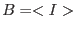
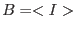

For those whose heads began to ache at around the second equation, think of it this way: at each pixel of the image, the probability of recording  events is given by the Poisson distribution corresponding to the expectation value
events is given by the Poisson distribution corresponding to the expectation value  . Let us take
. Let us take  , the sum of our model terms at that pixel, as an estimate of
, the sum of our model terms at that pixel, as an estimate of  . We can then assign a probability to the pixel value from equation 5. Now let us multiply all the probabilities for individual pixels together. We conjecture that this product (or, equivalently, minus its log) will be minimized exactly for .
. We can then assign a probability to the pixel value from equation 5. Now let us multiply all the probabilities for individual pixels together. We conjecture that this product (or, equivalently, minus its log) will be minimized exactly for .